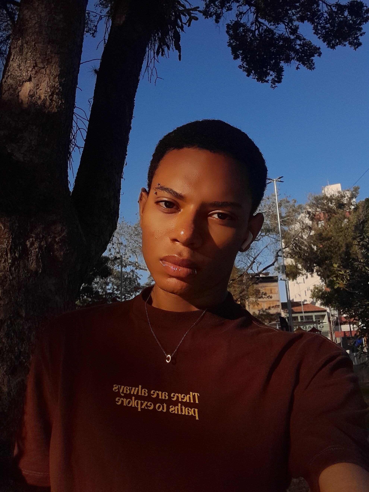

Quem é Hades Corporation?
A Hades Design nasceu para ajudar empresas, marcas e empreendedores a transformarem sua presença digital em uma verdadeira ferramenta de negócios.
Criamos sites personalizados, modernos e estratégicos, desenvolvidos para apresentar sua marca,
conquistar a atenção dos visitantes e transformar acessos em oportunidades de venda.
Mais do que criar páginas bonitas, buscamos entender a essência de cada negócio para desenvolver experiências digitais que unam design,
tecnologia, praticidade e estratégia
Seja para apresentar sua empresa, divulgar seus produtos ou construir uma loja virtual completa, a HadesTech transforma
sua ideia em uma presença digital feita para você.
Seu negócio tem uma história. Nós criamos o espaço digital para contá-la.
HadesTech — seu negócio, conectado ao futuro.
𝕮𝖔𝖓𝖍𝖊𝖈𝖊𝖓𝖉𝖔 𝖓𝖔𝖘𝖘𝖔 𝖋𝖚𝖓𝖉𝖆𝖉𝖔𝖗.
Olá! meu nome é Cauã de Souza Alvarino, tenho 19 anos e sou criador da Hades Design
nós surgimos em um cenário em que a tecnologia é essencial e fundamental para o marketing cultural e ,
para o mercado publicitário.
Em meio a tudo isso nós surgimos, afim de trazer estilo e inovação ,acompanhado de nossa estética apeculiar e artística.
Que tal conhecer um pouco do meu estilo?
